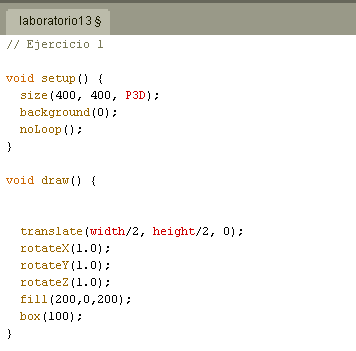
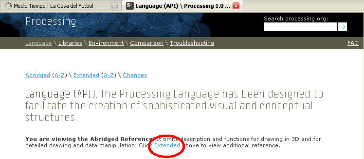
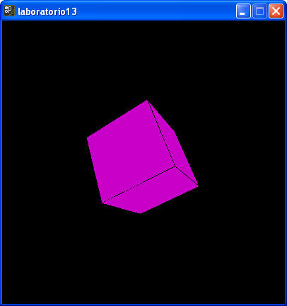
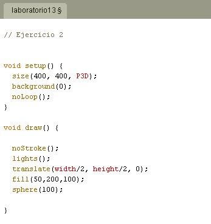
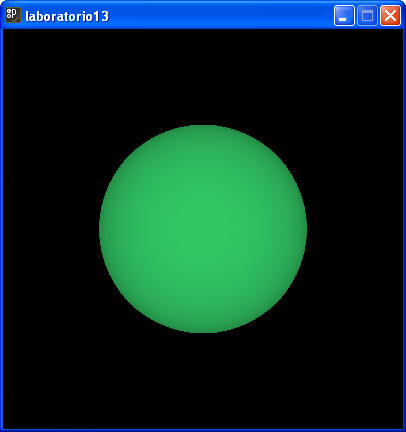
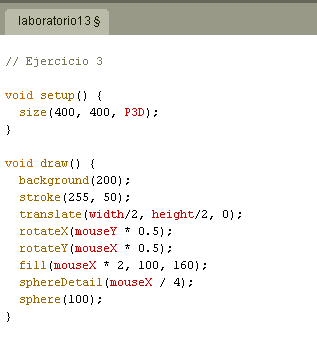
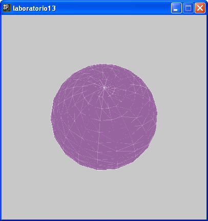
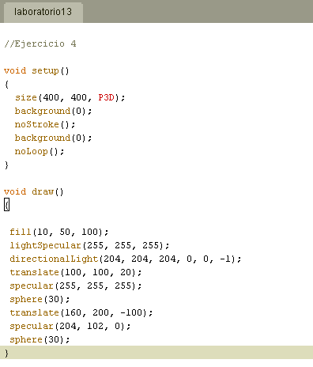
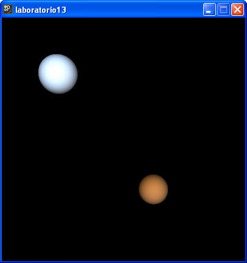

1.- Una vez que has aprendido el cómo puedes construir un objeto en 3D, procederemos a utilizar las librerías que tiene definidas processing para hacerlo. Una librería es un archivo que alguien creo por nosotros, donde se le "enseña" a la computadora ha realizar ciertas cosas. Puedes verlas como archivos donde existen clases predefinidas.
Agrega el siguiente código a tu laboratorio:

Accede a la referencia en línea de la herramienta, y revisa para que sirve cada uno de los nuevos métodos que has introducido al programa. Por omisión la ayuda que se muestra no incluye referencia al manejo de objetos en 3D, por lo que debes elegir la opción de ver ayuda de componentes avanzados de la siguiente forma:

Después de agregar el código se debe mostrar lo siguiente en la pantalla:

a) Introduce diferentes valores a los métodos de rotación y traslación. De está forma se espera que entiendas que hace cada uno de estos métodos.
b) Cambia el aspecto de la caja "box", para que no se muestre un cubo.
2.- Nuevamente introduce las siguientes líneas de código, al final se te pide que realices algunos ajustes al dibujo.

La apariencia de la ventana al terminar de capturar es la siguiente:

a) cambia el color, posición, tamaño de la esfera. Cómo te habrás dado cuenta, también puedes cambiar la posición Z del objeto.
b) Pon en comentario el comando que define la luz en el escenario. ¿Que ocurre?.
3.- Introduce las siguientes líneas de código. Al final se te pide que reflexiones sobre algunos aspectos del programa.

La apariencia de la ventana al terminar de capturar es la siguiente:

Una vez hecho lo anterior, prueba tu programa y reflexiona sobre las siguiente preguntas:
¿Por qué el número de polígonos que componen la esfera, así como su color, están controlados con los movimientos del apuntador del mouse?
¿Se podrá controlar la traslación del objeto con el mouse. O en su defecto que se anime el objeto y simule una traslación?. Si deseas hacerlo, revisas el ejercicio de extrusión del laboratorio pasado para hacerlo.
4.- Introduce las siguientes líneas de código. Como te habrás dado cuenta, los objetos "reflejan" la luz de diferente forma. Entra a la ayuda en línea y profundiza sobre este tema.

La apariencia de la ventana al terminar de capturar es la siguiente:

5.- Investigación individual: El uso de la técnica de programación recursiva para la elaboración de dibujos computacionales.
Soporta tu investigación, utilizando citas obtenidas en fuentes bibliográficas, en la biblioteca digital ,o bien con la opinión de un artista que haya desarrollado algún producto mediante algún lenguaje de programación. En cualquier caso, cita las fuentes utilizadas. (utilizar al menos dos fuentes de referencia)
Se recomienda que el documento generado, no exceda una longitud de 2 cuartillas, además de ilustrar con imágenes algunos ejemplos que consideres representativos.
Forma de entrega: Debes generar un documento de WORD que anexaras a un archivo compactado que incluya el archivo de processing y la investigación.